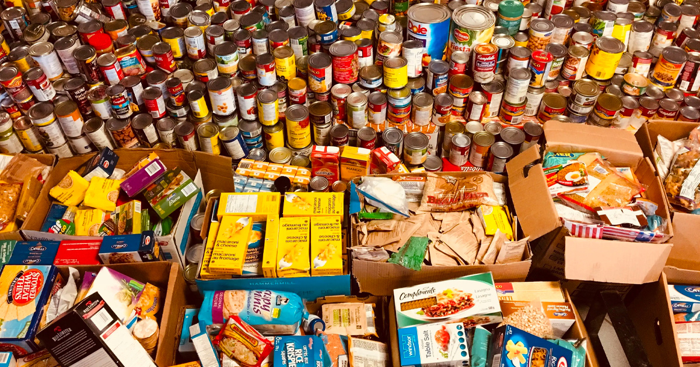
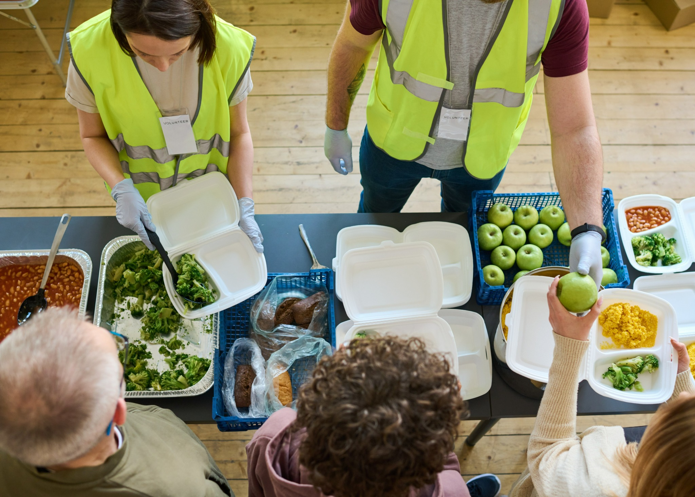

Fighting Food Poverty Together
Supporting Leeds residents with food aid, volunteering and partnership.
What is the Leeds Food Aid Network?
Leeds Food Aid Network (LFAN) brings together food banks, charities, community groups, and individuals to tackle food poverty in Leeds.
- ·Supports individuals & families in crisis
- ·Connects donors, volunteers & professionals
- ·Provides location-based food aid resources

Who Are You?
Latest News & Updates
- Apr 2025: New emergency food drop-off point in East Leeds.
- Mar 2025: LFAN featured in local news for donation drive.